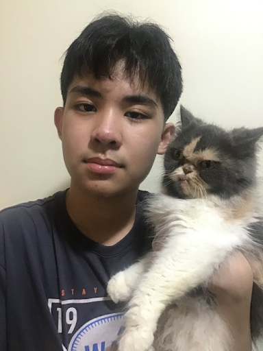

Community problem.

This is Nicole Angela Budlong.
One of the things she mostly enjoys is eating and dancing.
She is the type of person that never forgets her family members or another important individual.
She has a lot of interests and is the kind of person who likes to learn about new things, but her greatest passion is dance.
In addition, she shows a lot of compassion for the individuals in her life.

This is Ben Louis Lim.
Ben is a nice person.
He is someone who cares about what they do and helps others.
He can work together with a team to accomplish any goals they want to.
He does his best to succeed and to improve his skills.